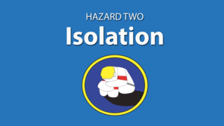
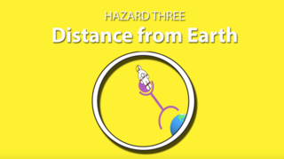
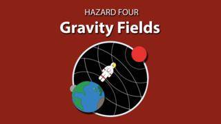
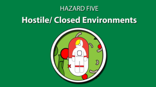

Project: Learning based on space projects
In this project, we will show you how to solve the problems encountered in space.
To facilitate, we will use the data provided by NASA itself and show each situation that can
occur in the
life of a living being outside the terrestrial environment.
To make it even more realistic, we will allow users to be able to interact with the character showing
situations that he may come across and how to solve a certain problem.
Information that was taken from NASA data and that will help in the development of the project.
This information will be taken into account when developing our system





Radiation
The first hazard of a human mission to Mars is also the most difficult to visualize because, well, space
radiation is invisible to the human eye. Radiation is not only stealthy, but considered one of the most
menacing of the five hazards.
Above Earth’s natural protection, radiation exposure increases cancer risk, damages the central nervous
system, can alter cognitive function, reduce motor function and prompt behavioral changes. To learn what can
happen above low-Earth orbit, NASA studies how radiation affects biological samples using a ground-based
research laboratory.
The space station sits just within Earth’s protective magnetic field, so while our astronauts are exposed to
ten-times higher radiation than on Earth, it’s still a smaller dose than what deep space has in store.
To mitigate this hazard, deep space vehicles will have significant protective shielding, dosimetry, and
alerts. Research is also being conducted in the field of medical countermeasures such as pharmaceuticals to
help defend against radiation.
ESC TO LEAVE
Isolation and confinement
Behavioral issues among groups of people crammed in a small space over a long period of time, no matter how
well trained they are, are inevitable. Crews will be carefully chosen, trained and supported to ensure they
can work effectively as a team for months or years in space.
On Earth we have the luxury of picking up our cell phones and instantly being connected with nearly
everything and everyone around us. On a trip to Mars, astronauts will be more isolated and confined than we
can imagine. Sleep loss, circadian desynchronization, and work overload compound this issue and may lead to
performance decrements, adverse health outcomes, and compromised mission objectives.
To address this hazard, methods for monitoring behavioral health and adapting/refining various tools and
technologies for use in the spaceflight environment are being developed to detect and treat early risk
factors. Research is also being conducted in workload and performance, light therapy for circadian
alignment, phase shifting and alertness.
ESC TO LEAVE
Distance from Earth
The third and perhaps most apparent hazard is, quite simply, the distance. Mars is, on average, 140 million
miles from Earth. Rather than a three-day lunar trip, astronauts would be leaving our planet for roughly
three years. While International Space Station expeditions serve as a rough foundation for the expected
impact on planning logistics for such a trip, the data isn’t always comparable. If a medical event or
emergency happens on the station, the crew can return home within hours. Additionally, cargo vehicles
continual resupply the crews with fresh food, medical equipment, and other resources. Once you burn your
engines for Mars, there is no turning back and no resupply.
Planning and self-sufficiency are essential keys to a successful Martian mission. Facing a communication
delay of up to 20 minutes one way and the possibility of equipment failures or a medical emergency,
astronauts must be capable of confronting an array of situations without support from their fellow team on
Earth.
ESC TO LEAVE
Gravity (or lack thereof)
The variance of gravity that astronauts will encounter is the fourth hazard of a human mission. On Mars,
astronauts would need to live and work in three-eighths of Earth’s gravitational pull for up to two
years. Additionally, on the six-month trek between the planets, explorers will experience total
weightlessness.
Besides Mars and deep space there is a third gravity field that must be considered. When astronauts
finally return home they will need to readapt many of the systems in their bodies to Earth’s gravity.
Bones, muscles, cardiovascular system have all been impacted by years without standard gravity. To
further complicate the problem, when astronauts transition from one gravity field to another, it’s
usually quite an intense experience. Blasting off from the surface of a planet or a hurdling descent
through an atmosphere is many times the force of gravity.
Research is being conducted to ensure that astronauts stay healthy before, during and after their
mission. NASA is identifying how current and future, FDA-approved osteoporosis treatments, and the
optimal timing for such therapies could be employed to mitigate the risk for astronauts developing
premature osteoporosis. Adaptability training programs and improving the ability to detect relevant
sensory input are being investigated to mitigate balance control issues. Research is ongoing to
characterize optimal exercise prescriptions for individual astronauts, as well as defining metabolic
costs of critical mission tasks they would expect to encounter on a Mars mission.
ESC TO LEAVE
Hostile/closed environments
A spacecraft is not only a home, it’s also a machine. NASA understands that the ecosystem inside a
vehicle plays a big role in everyday astronaut life. Important habitability factors include temperature,
pressure, lighting, noise, and quantity of space. It’s essential that astronauts are getting the
requisite food, sleep and exercise needed to stay healthy and happy.
Technology, as often is the case with out-of-this-world exploration, comes to the rescue in creating a
habitable home in a harsh environment. Everything is monitored, from air quality to possible microbial
inhabitants. Microorganisms that naturally live on your body are transferred more easily from one person
to another in a closed environment. Astronauts, too, contribute data points via urine and blood samples,
and can reveal valuable information about possible stressors. The occupants are also asked to provide
feedback about their living environment, including physical impressions and sensations so that the
evolution of spacecraft can continue addressing the needs of humans in space. Extensive recycling of
resources we take for granted is also imperative: oxygen, water, carbon dioxide, even our waste.
ESC TO LEAVE